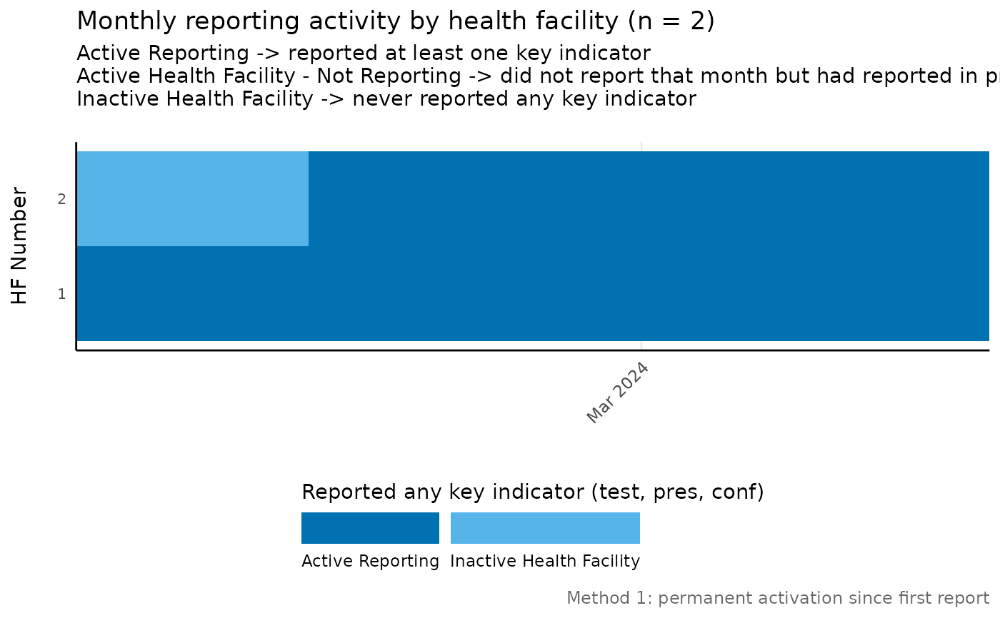
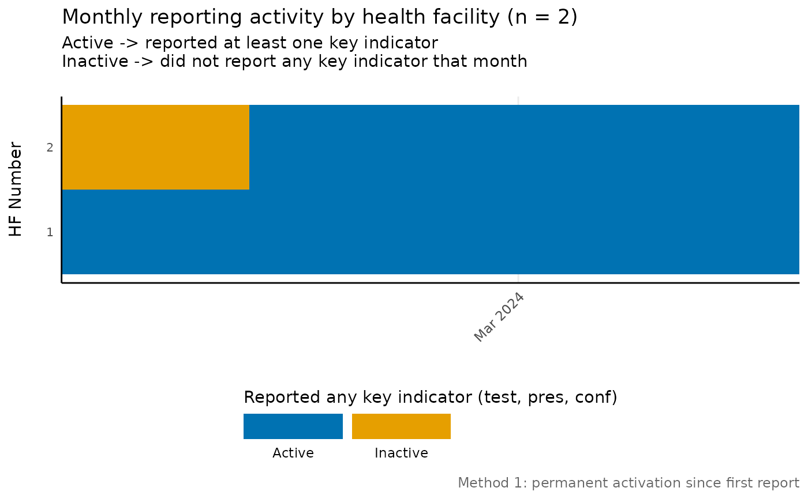

Plot monthly reporting activity by health facility
Source:R/facility_reporting_plot.R
facility_reporting_plot.RdBuilds a balanced monthly panel, flags reporting on key indicators, derives first reporting date and activity status, and returns a ggplot.
Usage
facility_reporting_plot(
data,
hf_col,
date_col = "date",
key_indicators = c("test", "pres", "conf"),
method = 1,
nonreport_window = 6,
reporting_rule = "any_non_na",
binary_classification = FALSE,
facet_col = NULL,
facet_ncol = 2,
year_breaks = NULL,
palette = "classic",
include_never_reported = TRUE,
target_language = "en",
source_language = "en",
lang_cache_path = base::tempdir(),
plot_path = NULL,
compress_image = FALSE,
image_overwrite = TRUE,
compression_speed = 1,
compression_verbose = TRUE,
plot_scale = 0.75,
plot_width = 22,
plot_height = 15,
plot_dpi = 300,
show_plot = TRUE,
...
)Arguments
- data
Data frame containing routine health facility records.
- hf_col
Character. Column storing health facility identifiers.
- date_col
Character. Column storing observation dates. Defaults to "date".
- key_indicators
Character vector with columns defining reporting activity. Defaults to
c("test", "pres", "conf").- method
Character or numeric. Classification method - can be numeric (1, 2, 3) or character ("method1", "method2", "method3", "all"). Defaults to 1.
- nonreport_window
Integer. Minimum number of consecutive non-reporting months to classify a facility as inactive in method 3. Defaults to 6.
- reporting_rule
Character. Defines what counts as reporting:
"any_non_na"(default, counts NA as non-reporting, 0 counts as reported) or"positive_only"(requires >0 value to count as reported).- binary_classification
Logical. If TRUE, uses binary classification ("Active", "Inactive") instead of three-level classification. Defaults to FALSE.
- facet_col
Character. Optional column name to use for faceting the plot. When provided, creates separate panels for each unique value in this column (e.g., one panel per province or administrative region). Can be any column type. Default is NULL (no faceting).
- facet_ncol
Integer. Number of columns for facet layout when
facet_colis provided. Defaults to 2.- year_breaks
Numeric value specifying the interval (in months) for x-axis date breaks. If NULL (default), uses "3 months".
- palette
Character. Colour palette for activity statuses. One of
c("classic", "sunset", "forest", "coral", "violet", "slate", "citrus", "orchid"). Defaults to "classic".- include_never_reported
Logical. If TRUE, includes facilities that have never reported in the plot. If TRUE (default), only shows facilities that have reported at least once.
- target_language
Target language for labels (ISO 639-1). Defaults to "en".
- source_language
Source language for labels. Defaults to "en".
- lang_cache_path
Path used to cache translations. Defaults to
base::tempdir().- plot_path
Path to directory for saving plot output. If NULL (default), plot is not saved.
- compress_image
Logical. Compress PNG using
compress_png()after saving. Defaults to FALSE.- image_overwrite
Logical. Overwrite an existing file when TRUE. Defaults to TRUE.
- compression_speed
Integer (1-10) controlling compression effort. Defaults to 1.
- compression_verbose
Logical. Emit compression progress when TRUE. Defaults to TRUE.
- plot_scale
Numeric. Scaling factor for saved plots. Values > 1 increase size, < 1 decrease size. Default is 0.75.
- plot_width
Numeric. Width of saved plot in inches. Default is 20.
- plot_height
Numeric. Height of saved plot in inches. Default is 15.
- plot_dpi
Numeric. Resolution of saved plot in dots per inch. Default is 300.
- show_plot
Logical. If FALSE, the plot is returned invisibly (not displayed). Useful when only saving plots. Default is TRUE.
- ...
Additional arguments passed to internal functions.
Examples
toy_data <- tibble::tibble(
hf_uid_new = rep(c("HF1", "HF2"), each = 4),
date = rep(
base::seq.Date(
base::as.Date("2024-01-01"),
by = "month",
length.out = 4
),
times = 2
),
test = c(NA, 1, 2, NA, NA, NA, 3, 4),
pres = c(0, 2, NA, 1, NA, 1, 2, 3),
conf = c(0, NA, 1, 0, NA, NA, 1, 2)
)
facility_reporting_plot(
data = toy_data,
hf_col = "hf_uid_new"
)
#> Warning: Locale NA not available. Using system default.

# Binary classification example
facility_reporting_plot(
data = toy_data,
hf_col = "hf_uid_new",
binary_classification = TRUE
)
#> Warning: Locale NA not available. Using system default.
